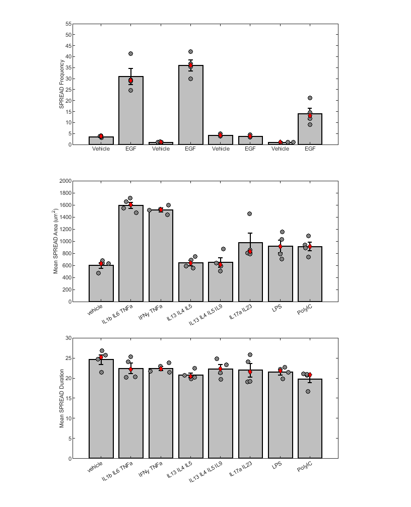

Contents
- Figure E3 - Analysis of HBE1 SPREAD frequency after EGF per run, the SPREAD area and duration across bulk cytokine treatment groups.
- Figure E3-A Combine Multiple SPREAD experiment's Vehicle and EGF data
- Pull the vehicle and EGF treated datasets
- Figure E3 - B & C - compare SPREAD area and SPREAD duration to vehicle
- Make Figure E3 via plotting functions
- Figure Legend:
Figure E3 - Analysis of HBE1 SPREAD frequency after EGF per run, the SPREAD area and duration across bulk cytokine treatment groups.
Experimenting with HBE1 cells expressing the ERK-KTR ERK biosensor Comparing SPREAD freqency for Vehicle and EGF treated cells across experiments (Figure E3A) Comparing SPREAD area (in um^2) across bulk cytokine treatments (Figure E3B) Comparing SPREAD duration (in minutes) across bulk cytokine treatments (Figure E3C) Figure legend is at the bottom.
addpath('Z:\Code\Nick','Z:\Code\Cell Trace','Z:\Code\Image Analysis')
Figure E3-A Combine Multiple SPREAD experiment's Vehicle and EGF data
basePath = 'Z:\Processed Data\SPREADs\'; % dataset1 are experiments that have HBE1 cells with ERKTR % Experiment 1 % 2020-11-30 HBE1 AMPKAR ERKTR Cytokine Array Stat test - updated and saved dataset1{1} = [basePath,'2020-11-30 HBE1 AMPKAR ERKTR Cytokine Array Stat test\2020-11-30 HBE1 AMPKAR ERKTR Cytokine Array Stat test_Processed_Copy.mat']; % Experiment 2 % 2021-08-18 HBE1 AE Cyto - data updated and saved dataset1{2} = [basePath,'2021-08-18 HBE1 AE Cyto INS 2DG OLI\2021-08-18 HBE1 AE Cyto INS 2DG OLI_Processed_Copy.mat']; % dataset2 are experiments that have HBE1 cells with EKAREN4 % Experiment 3 % 2022-08-18 HBE1 EKAR Cytokine Array dataset2{1} = [basePath,'2022-08-18 HBE1 EKAR Cyto HC\2022-08-18 HBE1 EKAR Cyto HC_Processed_Copy.mat']; % Experiment 4 % 2022-11-10 HBE1 EKAR Cytokine Array dataset2{2} = [basePath,'2022-11-10 HBE1 EKAREN4 Cyto Inhibs\2022-11-10 HBE1 EKAREN4 Cyto Inhibs_Processed_Copy.mat']; % collect the data from the respective experiments data1 = convertSPREADToDataframe2(dataset1, 'ERKTR', 'tmaxaftertx',24,'aftertx',2); data2 = convertSPREADToDataframe2(dataset2, 'EKAR', 'tmaxaftertx',24,'aftertx',2); % merge them mData = [data1;data2];
Pull the vehicle and EGF treated datasets
thisData = matches(mData.txinfo,{'1 fim 1 vehicle','1 fim 1 vehicle 1 vehicle','1 fim 10ng/mL EGF','1 fim 1 vehicle 10ng/mL EGF','1 fim 10ng/mL EGF 1 vehicle'});
vEdata = mData(thisData,:);
VEtxOrder = {'2020-11-30 HBE1 AMPKAR ERKTR Cytokine Array Stat testfim1 + vehicle1','2020-11-30 HBE1 AMPKAR ERKTR Cytokine Array Stat testfim1 + EGF10n','2022-11-10 HBE1 EKAREN4 Cyto Inhibsfim1 + vehicle1 + vehicle1','2022-11-10 HBE1 EKAREN4 Cyto Inhibsfim1 + vehicle1 + EGF10n',...
'2021-08-18 HBE1 AE Cyto INS 2DG OLIfim1 + vehicle1 + vehicle1','2021-08-18 HBE1 AE Cyto INS 2DG OLIfim1 + EGF10n + vehicle1','2022-08-18 HBE1 EKAR Cyto HCfim1 + vehicle1','2022-08-18 HBE1 EKAR Cyto HCfim1 + EGF10n'};
vEdata.exptx = categorical(strcat(vEdata.exp,vEdata.full),VEtxOrder);
vEStats = grpstats(vEdata,"exptx",["mean","median","sem"],"DataVars","freq") % get the mean, median,I and SEM of the data
vEStats.exptx = categorical(vEStats.exptx,VEtxOrder);
vEStats =
8×5 table
exptx GroupCount mean_freq median_freq sem_freq
____________________________________________________________________ __________ _________ ___________ ________
2020-11-30 HBE1 AMPKAR ERKTR Cytokine Array Stat testfim1 + vehicle1 2020-11-30 HBE1 AMPKAR ERKTR Cytokine Array Stat testfim1 + vehicle1 4 3.567 3.674 0.21203
2020-11-30 HBE1 AMPKAR ERKTR Cytokine Array Stat testfim1 + EGF10n 2020-11-30 HBE1 AMPKAR ERKTR Cytokine Array Stat testfim1 + EGF10n 4 31.05 29.142 3.6125
2022-11-10 HBE1 EKAREN4 Cyto Inhibsfim1 + vehicle1 + vehicle1 2022-11-10 HBE1 EKAREN4 Cyto Inhibsfim1 + vehicle1 + vehicle1 4 1.1172 1.0931 0.082379
2022-11-10 HBE1 EKAREN4 Cyto Inhibsfim1 + vehicle1 + EGF10n 2022-11-10 HBE1 EKAREN4 Cyto Inhibsfim1 + vehicle1 + EGF10n 4 36.07 36.067 2.5559
2021-08-18 HBE1 AE Cyto INS 2DG OLIfim1 + vehicle1 + vehicle1 2021-08-18 HBE1 AE Cyto INS 2DG OLIfim1 + vehicle1 + vehicle1 2 4.2804 4.2804 0.61148
2021-08-18 HBE1 AE Cyto INS 2DG OLIfim1 + EGF10n + vehicle1 2021-08-18 HBE1 AE Cyto INS 2DG OLIfim1 + EGF10n + vehicle1 2 3.86 3.86 0.49683
2022-08-18 HBE1 EKAR Cyto HCfim1 + vehicle1 2022-08-18 HBE1 EKAR Cyto HCfim1 + vehicle1 4 0.97512 0.99679 0.026775
2022-08-18 HBE1 EKAR Cyto HCfim1 + EGF10n 2022-08-18 HBE1 EKAR Cyto HCfim1 + EGF10n 4 14.126 13.151 2.5979
Figure E3 - B & C - compare SPREAD area and SPREAD duration to vehicle
% 2020-11-30 HBE1 use this run for the plots figE3BC = {[basePath,'2020-11-30 HBE1 AMPKAR ERKTR Cytokine Array Stat test\2020-11-30 HBE1 AMPKAR ERKTR Cytokine Array Stat test_Processed_Copy.mat']}; dataE3BCa = convertSPREADToDataframe2(figE3BC, 'ERKTR', 'tmaxaftertx',24,'exclude',{'IL620n','TNFa20n','Simvastatin','EGF'}); dataE3BC = dataE3BCa; % make a copy of the data for ease of use % simplify the names for plotting dataE3BC.txinfo = strrep(dataE3BC.txinfo,'1 fim ',''); dataE3BC.txinfo = strrep(dataE3BC.txinfo, '10ng/mL ',''); dataE3BC.txinfo = strrep(dataE3BC.txinfo, '20ug/mL ',''); dataE3BC.txinfo = strrep(dataE3BC.txinfo, '1 v','v'); % txOrder = {'1 vehicle', '20ug/mL LPS', '20ug/mL PolyIC', '10ng/mL IL13 10ng/mL IL4 10ng/mL IL5', '10ng/mL IL13 10ng/mL IL4 10ng/mL IL5 10ng/mL IL9', '10ng/mL IL17a 10ng/mL IL23', '10ng/mL IFNy 10ng/mL TNFa', '10ng/mL IL1b 10ng/mL IL6 10ng/mL TNFa'}; % put them in order txOrder = {'vehicle', 'IL1b IL6 TNFa', 'IFNy TNFa', 'IL13 IL4 IL5', 'IL13 IL4 IL5 IL9', 'IL17a IL23', 'LPS', 'PolyIC'}; dataE3BC.exptx = categorical(dataE3BC.txinfo,txOrder); % get the data on spread area and duration E3BC = grpstats(dataE3BC,"exptx",["mean","median","sem"],"DataVars",["area","dur"]); E3BC.exptx = categorical(E3BC.exptx,txOrder) % See which SPREAD areas are significantly different versus control (vehicle) [~,~,statsArea] = anova1(dataE3BC.area,dataE3BC.exptx,'off'); [resultsArea,~,~,gnamesArea] = multcompare(statsArea,"CriticalValueType","dunnett",'ControlGroup',find(contains(statsArea.gnames,'vehicle')),'Display','off'); resultsTblArea = array2table(resultsArea,"VariableNames", ["Group","Control Group","Lower Limit","Difference","Upper Limit","P-value"]); resultsTblArea.("Group") = gnamesArea(resultsTblArea.("Group")); resultsTblArea.("Control Group") = gnamesArea(resultsTblArea.("Control Group")) % See which SPREAD durations are significantly different versus control (vehicle) [~,~,statsDur] = anova1(dataE3BC.dur,dataE3BC.exptx,'off'); [resultsDur,~,~,gnamesDur] = multcompare(statsDur,"CriticalValueType","dunnett",'ControlGroup',find(contains(statsDur.gnames,'vehicle')),'Display','off'); resultsTblDur = array2table(resultsDur,"VariableNames", ["Group","Control Group","Lower Limit","Difference","Upper Limit","P-value"]); resultsTblDur.("Group") = gnamesDur(resultsTblDur.("Group")); resultsTblDur.("Control Group") = gnamesDur(resultsTblDur.("Control Group"))
E3BC =
8×8 table
exptx GroupCount mean_area median_area sem_area mean_dur median_dur sem_dur
________________ __________ _________ ___________ ________ ________ __________ _________
vehicle vehicle 4 603.09 629.94 44.992 0.41075 0.41984 0.019491
IL1b IL6 TNFa IL1b IL6 TNFa 4 1596 1601.8 53.387 0.37438 0.36966 0.021694
IFNy TNFa IFNy TNFa 4 1517.5 1517.2 32.801 0.37407 0.3716 0.0089542
IL13 IL4 IL5 IL13 IL4 IL5 4 643.41 633.76 44.898 0.34621 0.34051 0.009662
IL13 IL4 IL5 IL9 IL13 IL4 IL5 IL9 4 651.48 612.48 78.746 0.37192 0.3727 0.018902
IL17a IL23 IL17a IL23 4 975.41 830.07 159.6 0.36691 0.36013 0.028886
LPS LPS 4 918.49 908.49 104.08 0.35856 0.36336 0.01069
PolyIC PolyIC 4 913.95 914.53 71.469 0.3304 0.34692 0.01758
resultsTblArea =
7×6 table
Group Control Group Lower Limit Difference Upper Limit P-value
____________________ _____________ ___________ __________ ___________ __________
{'IL1b IL6 TNFa' } {'vehicle'} 661.15 992.87 1324.6 1.882e-08
{'IFNy TNFa' } {'vehicle'} 582.69 914.41 1246.1 2.0577e-07
{'IL13 IL4 IL5' } {'vehicle'} -291.4 40.319 372.04 0.99953
{'IL13 IL4 IL5 IL9'} {'vehicle'} -283.33 48.39 380.11 0.99848
{'IL17a IL23' } {'vehicle'} 40.594 372.31 704.03 0.023236
{'LPS' } {'vehicle'} -16.325 315.4 647.12 0.067143
{'PolyIC' } {'vehicle'} -20.869 310.85 642.57 0.072775
resultsTblDur =
7×6 table
Group Control Group Lower Limit Difference Upper Limit P-value
____________________ _____________ ___________ __________ ___________ ________
{'IL1b IL6 TNFa' } {'vehicle'} -0.10864 -0.036362 0.035916 0.57985
{'IFNy TNFa' } {'vehicle'} -0.10895 -0.036676 0.035602 0.57136
{'IL13 IL4 IL5' } {'vehicle'} -0.13681 -0.064536 0.0077413 0.093919
{'IL13 IL4 IL5 IL9'} {'vehicle'} -0.1111 -0.038823 0.033454 0.51469
{'IL17a IL23' } {'vehicle'} -0.11611 -0.043834 0.028443 0.39242
{'LPS' } {'vehicle'} -0.12447 -0.052191 0.020087 0.23231
{'PolyIC' } {'vehicle'} -0.15262 -0.080343 -0.0080658 0.024924
Make Figure E3 via plotting functions
figgy = figure; ax = []; % make an axes handle % plot each run's vehicle and EGF SPREAD frequency (Figure E3A) ax{1} = subplot(3,1,1); bar(vEStats.exptx,vEStats.mean_freq,... % plot the spread frequency 'FaceColor',[0.75,0.75,0.75],... 'EdgeColor','k', 'LineWidth',1.5); hold on; ylabel('SPREAD Frequency') errorbar(vEStats.exptx,vEStats.mean_freq,vEStats.sem_freq,'.','vertical','Color','k','LineWidth', 1.5,'MarkerSize', 1); % plot SEM swarmchart(vEdata.exptx,vEdata.freq,'XJitter','density','YJitter','none','MarkerEdgeColor','k','MarkerFaceColor',[0.5,0.5,0.5]) % ,'MarkerFaceColor','b' % raw data plot(vEStats.exptx,vEStats.median_freq,'d','MarkerFaceColor','r','MarkerEdgeColor','k') % ,'MarkerFaceColor','b' % plot median ylim([0,55]); xticklabels({'Vehicle','EGF','Vehicle','EGF','Vehicle','EGF','Vehicle','EGF'}) hold off; % plot each conditions SPREAD area (Figure E3B) ax{2} = subplot(3,1,2); bar(E3BC.exptx,E3BC.mean_area,... % plot the mean area 'FaceColor',[0.75,0.75,0.75],... 'EdgeColor','k', 'LineWidth',1.5); hold on; ylabel('Mean SPREAD Area (um^2)') errorbar(E3BC.exptx,E3BC.mean_area,E3BC.sem_area,'.','vertical','Color','k','LineWidth', 1.5,'MarkerSize', 1); % plot SEM swarmchart(dataE3BC.exptx,dataE3BC.area,'XJitter','density','YJitter','none','MarkerEdgeColor','k','MarkerFaceColor',[0.5,0.5,0.5]) % ,'MarkerFaceColor','b' % raw data plot(E3BC.exptx,E3BC.median_area,'d','MarkerFaceColor','r','MarkerEdgeColor','k') % ,'MarkerFaceColor','b' % plot median ylim([0,2000]); hold off; % plot each conditions SPREAD duration (Fiugre E3C) ax{3} = subplot(3,1,3); bar(E3BC.exptx,E3BC.mean_dur*60,... % plot the mean spread duration 'FaceColor',[0.75,0.75,0.75],... 'EdgeColor','k', 'LineWidth',1.5); hold on; ylabel('Mean SPREAD Duration'); errorbar(E3BC.exptx,E3BC.mean_dur*60,E3BC.sem_dur*60,'.','vertical','Color','k','LineWidth', 1.5,'MarkerSize', 1); % plot SEM swarmchart(dataE3BC.exptx,dataE3BC.dur*60,'XJitter','density','YJitter','none','MarkerEdgeColor','k','MarkerFaceColor',[0.5,0.5,0.5]) % ,'MarkerFaceColor','b' % raw data plot(E3BC.exptx,E3BC.median_dur*60,'d','MarkerFaceColor','r','MarkerEdgeColor','k') % ,'MarkerFaceColor','b' % plot median ylim([0,30]); hold off; % standardize the figure for printing fontname(figgy,"Arial"); fontsize(figgy,8,"points") % make the font 8 pt and arial figgy.Units = "inches"; % make it inches figgy.Position = [0.05,0.05,8.5,11]; % put it on a page ax{1}.Units = 'Inches'; ax{2}.Units = 'Inches'; ax{3}.Units = 'Inches'; % make the subplots a good size ax{3}.InnerPosition = [1.5,1,5.5,2.5]; ax{2}.InnerPosition = [1.5,4.25,5.5,2.5]; ax{1}.InnerPosition = [1.5,7.5,5.5,2.5]; % make the subplots a good size saveas(figgy,'Z:\imageData\SPREADs\Plotting_Code\Figure_Outputs\E3_HBE1_SPREAD_Dur_Area_EGF.fig') saveas(figgy,'Z:\imageData\SPREADs\Plotting_Code\Figure_Outputs\E3_HBE1_SPREAD_Dur_Area_EGF.svg')
Figure Legend:
Figure E3: Variable SPREAD recognition in EGF treated cells and pro-inflammatory ligands-induced SPREAD size and duration in HBE1 cells. (A) SPREAD frequency in vehicle and EGF treated HBE1 cells compared across experimental replicates. Dark gray dots represent technical replicates within experimental replicates. (B) Mean SPREAD area (maximum area of per SPREAD in µm2) plotted according to treatment. (C) Mean SPREAD duration (in minutes) by treatment. For A–C, dark gray dots represent technical replicates, red diamonds indicate data median, and error bars show S.E.M. Red asterisks and lines indicate conditions where SPREAD duration is significantly different compared to vehicle control group (P < 0.005), calculated using 1-way ANOVA compared to the control and adjusted for multiple comparisons via the Dunnett%s procedure.